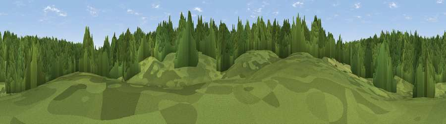

Hungry Hill
#46270 in England · top 98% of its area beats it · near Pamber HeathThe view, rendered

A 360° render of this exact spot computed from the terrain model, tree cover and land cover — summer colours, afternoon light, calibrated against photographs of famous viewpoints. Real trees, hedges and buildings will differ in detail.
The panorama
Grey silhouette: terrain skyline in each direction (720 bearings, Earth curvature and refraction included). Dashed green: skyline with trees (+15 m) and buildings (+8 m) as obstacles. Blue strip: how far the ground is visible on each bearing.
Where the view opens
Wedge length = distance to the farthest visible ground on that bearing (vegetation-aware). Rings at 10, 25 and 50 km.
What fills the view
96% woodland · 4% grassland
Angular shares of the visible panorama (visual magnitude), not map area. Landscape diversity 0.08 (0–1 Shannon).
Key numbers
More beautiful places nearby
The staircase of upgrades: each row has a higher view potential than everything closer. Driving times are estimates from straight-line distance, calibrated against real road routing — check an actual route before setting out.
| Place | Direction | Drive | Score |
|---|---|---|---|
| Fox Hill | ENE · 1 km | ~3 min | 15.3 |
| Viewpoint near Stratfield Mortimer | E · 5 km | ~11 min | 16.8 |
| Viewpoint near Woolhampton | NW · 6 km | ~13 min | 33.9 |
| Viewpoint near Woolhampton | NW · 6 km | ~14 min | 36.8 |
| Viewpoint near Ramsdell | SSW · 9 km | ~17 min | 56.0 |
| Viewpoint near Hannington | WSW · 11 km | ~21 min | 62.6 |
| Cottington's Hill | SW · 12 km | ~22 min | 65.6 |
| Watership Down | WSW · 14 km | ~26 min | 71.4 |
51.36429, -1.10952 · source: osm peak · position refined by local search. Computed location — check access rights before visiting.